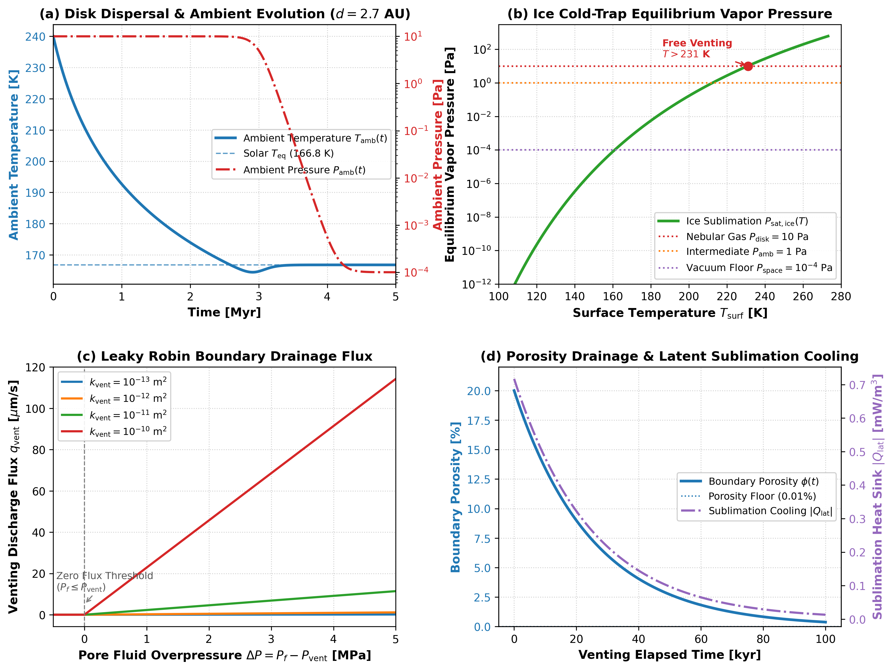

Cold Surface Venting and Disk Dispersal Validation
This module validates the cold surface venting boundary condition, ice cold-trap vapor pressure thermodynamics, protoplanetary disk dispersal transitions, and coupled marker porosity drainage with sublimation latent cooling in Erebus.jl.
Theoretical Formulation
The physical theory of porous surface drainage, ice cold-trap vapor pressure thermodynamics, disk dispersal transitions, and marker porosity drainage with latent cooling is derived in detail in Volatile Degassing, Cold Surface Venting, and Atmospheric Escape.
Key constitutive relations validated on this page include:
- Darcy Surface Drainage Boundary ($q_{\text{vent}}$): $q_{\text{vent}} = \frac{k_{\text{vent}}}{\eta_f} \frac{P_f - P_{\text{vent}}}{\Delta}, \quad S_{\text{vent}} = \frac{C_{\text{face}}}{\Delta} \max\left(0, P_f - P_{\text{vent}}\right)$
- Clausius-Clapeyron Ice Cold Trap ($P_{\text{sat,ice}}$): $P_{\text{sat,ice}}(T) = P_0 \exp\left[-\frac{L_{\text{sub}}}{R_v}\left(\frac{1}{T} - \frac{1}{T_0}\right)\right], \quad P_{\text{vent}} = \max\left(P_{\text{amb}}, P_{\text{sat,ice}}(T_{\text{surf}})\right)$
- Disk Dispersal Sigmoid Transition ($w_{\text{disp}}$): $w_{\text{disp}}(t) = \frac{1}{1 + \exp\left[-\frac{t - t_{\text{disp}}}{\Delta t_{\text{disp}}}\right]}$ $T_{\text{amb}}(t) = (1 - w_{\text{disp}}(t)) T_{\text{disk}}(t) + w_{\text{disp}}(t) T_{\text{eq}}$
- Marker Porosity Drainage & Latent Sublimation Cooling: $\phi_m(t + \Delta t) = \max\left(\phi_{\text{min}}, \phi_m(t) - S_{\text{vent}}(\mathbf{x}_m) \Delta t\right)$ $Q_{\text{lat}} = - L_{\text{sub}} \cdot \rho_f \cdot S_{\text{vent}} \le 0 \quad [\text{W/m}^3]$
Invariants and Limits
- Equilibrium Flux Invariant: When $P_f \le P_{\text{vent}}$, venting flux $q_{\text{vent}} = 0$ exactly (fluid does not drain backward into the planetesimal).
- Deep Cold Clamping: At $T \le 100\text{ K}$, $P_{\text{sat,ice}} < 10^{-14}\text{ Pa} \ll P_{\text{amb}}$, such that $P_{\text{vent}} = P_{\text{amb}}$.
- Dispersal Asymptotes: For $t \ll t_{\text{disp}}$, $w_{\text{disp}} \to 0$ ($T_{\text{amb}} \to T_{\text{disk}}$); for $t \gg t_{\text{disp}}$, $w_{\text{disp}} \to 1$ ($T_{\text{amb}} \to T_{\text{eq}}$).
- Porosity Clamping & Mass Conservation: Marker porosity satisfies $\phi_m \ge \phi_{\text{min}}$ and cumulative vented mass matches the volume-integrated porosity deficit within machine precision.
Literature Anchors
- Young, E. D., Ash, R. D., England, P., & Rumble, D. (1999). Fluid flow in carbonaceous chondrite parent bodies and the origin of magnetites. Science, 286(5443), 1331-1335.
- Washburn, E. W. (1924). The vapor pressure of ice and of water below the freezing point. Monthly Weather Review, 52(10), 488-490.
- Fu, R. R., & Elkins-Tanton, L. T. (2014). The early thermal evolution of planetesimals: Implications for differentiated asteroids and carbonaceous chondrite parent bodies. Earth and Planetary Science Letters, 390, 128-137.
- Kurokawa, H., Shibuya, T., Sekine, Y., Ehlmann, B. L., Usui, F., Kikuchi, S., & Yoda, M. (2022). Distant formation and differentiation of outer main belt asteroids and carbonaceous chondrite parent bodies. AGU Advances, 3(1), e2021AV000568.
Benchmark Diagnostics
Figure 1 illustrates the coupled performance of cold surface venting across disk dispersal:

Figure 1: Four-panel benchmark validation for cold surface venting. (a) Ambient temperature transition from disk accretion heating to solar radiative equilibrium ($T_{\text{eq}} \approx 166.8\text{ K}$ for default $A = 0.06$) during disk dispersal. (b) Water ice equilibrium vapor pressure $P_{\text{sat,ice}}(T)$ across the cold-trap regime ($100\text{ to }273\text{ K}$). (c) Evolution of boundary pore fluid pressure and surface venting flux. (d) Cumulative vented fluid mass and thermostatic latent cooling rate.
Verification Test Suite
test/test_venting_thermodynamics.jl:@testset "Disk Dispersal Transition Weights & Invariants"@testset "Solar Radiative Equilibrium Temperature (T_eq)"@testset "Time-Evolving Ambient Conditions (T_amb, P_amb)"@testset "Water Ice Sublimation Vapor Pressure (Clausius-Clapeyron)"@testset "Surface Venting Boundary Pressure (Cold-Trap Coupling)"@testset "VentingConfig Validation & Serialization"
test/test_venting_darcy_sink.jl:@testset "Surface Face Boundary Detection & Leaky Robin Assembly"@testset "Analytical 1D Steady-State Darcy Flux Benchmark"@testset "sink_vented_marker_porosity! Invariants & Mass Conservation"@testset "Sublimation Latent Cooling Heat Sink Verification"
test/test_venting_integration.jl:@testset "Runtime loop with venting inactive (baseline)"@testset "Runtime loop with cold surface venting active"